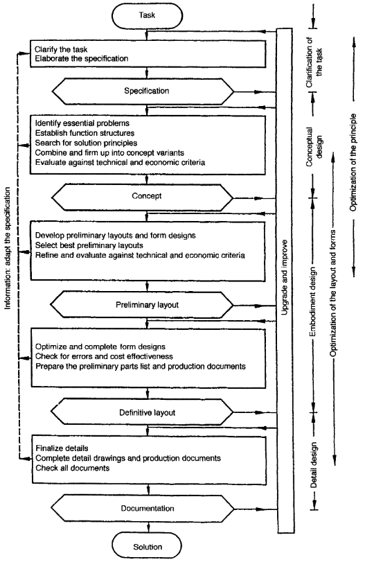
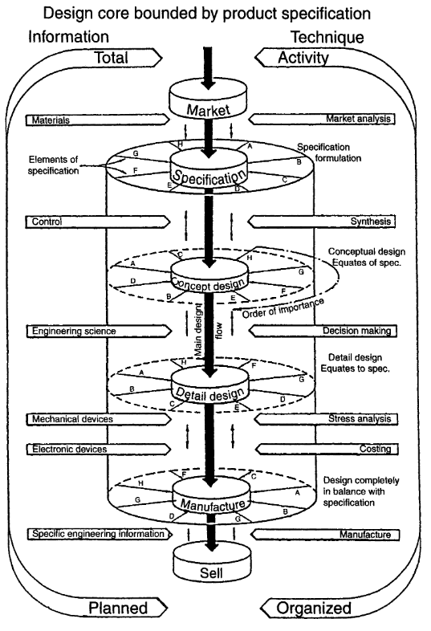
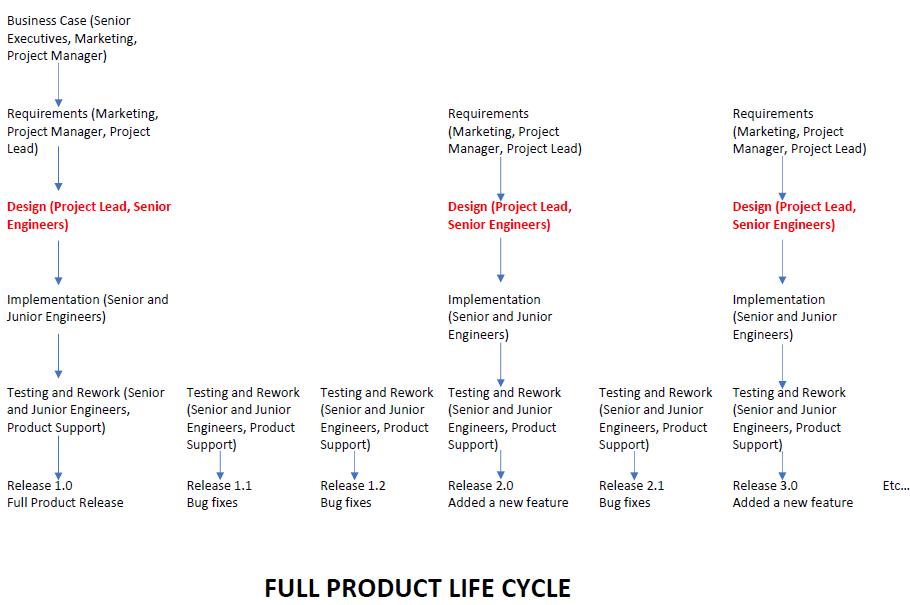
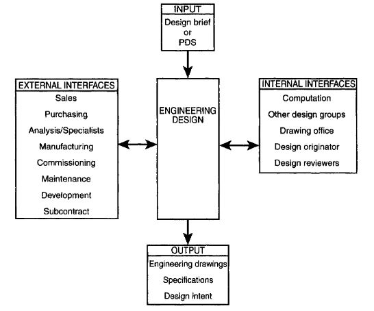

Engineering design is defined as a technology, not a science. There are many engineering design processes as there are many duties of a Design Engineer.
| Lecture Recording | Wednesday, January 12 (mp4) |
| The Engineering Design Process | Introduction to Engineering Design process and Stages of Designing |
Assignment 1 - The Design of a Battery for Hybrid/Electric Cars
In the study of science we seek to develop theories that explain natural phenomena. These scientific principles, which are self-evident in the natural sciences, are also employed in the engineering sciences. Engineering science subjects such as thermodynamics, mechanics and materials science are generally based on established scientific principles like the first and second laws of thermodynamics, Newton's laws, and atomic and molecular theories of matter respectively.
Engineering design is quite different since theories and hypotheses cannot be developed or tested by laboratory experiments. Engineering design involves much broader issues including the consideration of people and organizations. It must therefore be regarded as a technology. Technology is defined as the application of scientific knowledge to the practical aims of human life or, as it is sometimes phrased, to the change and manipulation of the human environment. This is particularly so since no single absolute answer can be found for any problem which involves both design decisions and compromise, since almost inevitably design parameters are contradictory.
Having established that engineering design is a technology it is necessary to present a definition. The dictionary definition of design is often "to fashion after a plan", which tells us very little about the way of working that we call engineering design. Engineering design is:
In order to increase our understanding of design it is helpful to extend this definition and to identify and highlight the main characteristics of engineering design:
In the design and construction of a robot vacuum cleaner, which engineering displines are involved?
Answer: Software engineering with AI, electrical engineering, mechanical engineering.
Most engineering design is now a trans-disciplinary team effort and the distinctions between the traditional disciplines, mechanical, electrical, electronic, civil and even chemical engineers are becoming blurred. Relatively new areas of engineering specialization, such as control and software engineering and artificial intelligence should be added to this list.
Consider for example automobiles, which not so very long ago were the sole province of mechanical engineers. Complex engine management systems, anti-lock braking systems, active suspension systems, four-wheel steering, air bags, and automatic seat belt tensioning are just some of the new developments. These systems are highly complex and require input from many different kinds of engineers for their optimum design.
The main components in the general layout are:
Although this can vary in detail, in general an engineering designer must be capable of dealing with the following:
The cost of a product, particularly in international markets, is only one factor which has a bearing on success. Reliability, fitness for purpose, delivery, ease of maintenance and many other factors have a significant influence and many of these are determined by design. Good design is therefore critical for success both in national and export markets and can only be ensured by adherence to a formal design process.
There are several suggested systems which vary in detail but are basically similar. The two
figures below reveals an underlying similarity with the basic process being to identify the problem, generate potential
solutions, select from the solutions, refine and analyse the selected concept, carry out
detail design and produce product descriptions which will enable manufacture.


Can you map each of the above two diagrams to that of the software product development life-cycle shown below?

Answer: Business case - Market, Requirements - Specifications, Design - Concept and Detail Design, Implementation - Manufacture, Release - Sell.
The first and most important stage in the design process as outlined in Fig. 1.5 is the
formulation of a Product Design Specification (PDS).
Companies must use a logical and comprehensive approach to design if they are to profit
from their labours. Therefore an all encompassing problem definition which is used to
audit and guide the remainder of the design process is essential.
Could you write a full product specification for a robot vacuum cleaner?
Answer: Image recognition, visual memory of floor layout, control of movement,...
It is essential that a design engineer has good communication skills. The design process begins
with a design brief or Product Design Specification which triggers the design department to act.
Two broad types of communication can be identified, internal and external.
